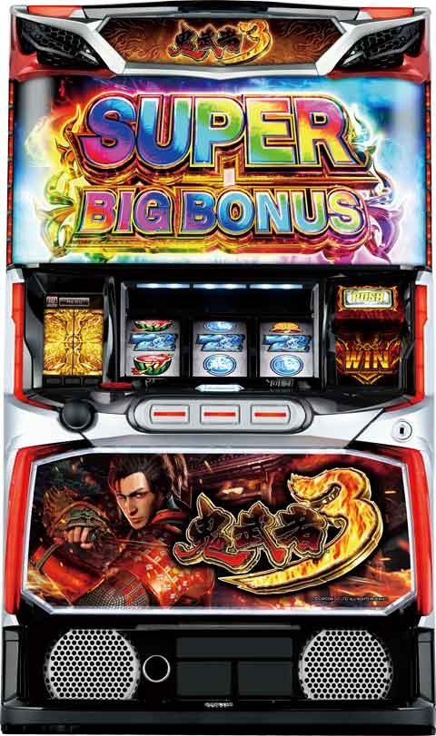
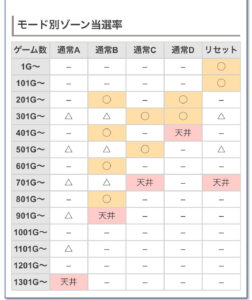
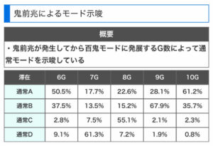
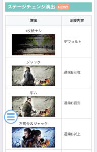
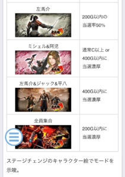

L鬼武者3

【天井情報】
1350G+α SBB当選
1000G以降のボーナスはSBB確定
リセット時 700G+α
【リセット判別】
不明
【有利区間について】
差枚+2200枚程度で有利切れそう。
有利切れた場合は超天国や鬼天国に期待出来る？
狙い目
【リセット狙い】
320Gから
50-200Gゾーン 40Gから150G過ぎの前兆抜けまで
【ボーナス間天井狙い】
730Gから
モードB以上濃厚 630Gから
メニュー履歴から250-300.450-500で百鬼ゾーン入っていればB以上濃厚？
【ゾーン狙い】
※差枚でボーダー調整
差枚は最後のボーナス時点で
差枚+1500から+2200枚
350-400ゾーン 140Gから
550-600ゾーン 450Gから
差枚+1200から+1499枚
350-400ゾーン 250Gから
550-600ゾーン 500Gから
それ以外
350-400ゾーン 340Gから
550-600ゾーン 540Gから
【天国狙い】
128G前後で発生する前兆抜けまで。
天国ゾーン中は液晶の帯で鬼モードと表記されてる。
【規定ポイント狙い】
規定ポイント到達で百鬼モードへ(約20%当選)
サブ液晶
背景赤 pt解放まで
背景緑 10-20G程度ボーダー下げれそう
※慎重派は赤背景単体打たなくて良いかも？
メニュー画面の百鬼ゾーン履歴背景も同様な感じ。
赤背景だと鬼精錬が近いので鬼精錬当選まで？
【有利区間切れ狙い】
差枚でゾーンのボーダー調整出来る。
やめ時
128G+α抜けでやめ。
(当選は150-160Gくらい)
前兆が万鬼モード時、ボーナス確定画面でV出現時ならSBB当選&次回鬼モード(天国)確定。
その他
モード別ゾーン示唆

モード示唆

ステージチェンジ時のアイキャッチ


参考元
基本情報
- メーカー: アデリオン
- 機械割: 97.3% 〜 110.3%
- 導入開始日: 2024年10月07日（月）
- ゲーム性概要: 通常時はゲーム数消化や規定小役ポイントでボーナスを抽選し、前兆ステージ（百鬼モード）で当否を告知。 ボーナスはスーパーBIG、BIG、REGの3種類あり、獲得枚数はそれぞれ約711枚、約318枚、約104枚。消化中はボーナス1G連抽選をしていて、赤7が揃えばBIG、青7ならスーパーBIG確定だ。ボーナス中に移行する可能性のある百鬼目ゾーンで百鬼目が停止すればボーナス終了後に即前兆ステージへ移行。移行確定後は百鬼目成立のたびに本前兆期待度がアップする。 初当り時の50%以上がスーパーBIG、さらにボーナス終了後は50%以上で天国モードへ移行するので128G＋αの引き戻しに期待できる。


打ち方
打ち方・小役
通常時の打ち方（小役狙い）
「最初に狙う絵柄」

左リール上段付近にBARを狙う（赤7狙いでもOK）。
「チェリー停止時」 成立役…弱チェリーor強チェリー

「BAR下段停止時」 成立役…ハズレorリプレイorベルor弱チャンス目or強チャンス目

「スイカ停止時」 成立役…スイカor強チャンス目

中リールにスイカを狙い（BAR目安）、右リールをフリー打ち。
「レア役の停止例」

変則押しはNG

通常時、押し順ナビなし時は左リール第1停止での消化を推奨する。
ボーナス中の打ち方
「基本はナビ通りに消化」

ナビなし時は通常時と同様に、左リールにBAR or 赤7を狙って消化しよう。
「JAC IN時」

擬似遊技なので目押しの必要はナシ。規定のゲーム数で狙えが発生するため、ハズして延命といった要素もない。
解析情報通常時
小役関連
小役確率
| 役 | 確率 |
|---|---|
| 弱チェリー | 1/109.2 |
| 強チェリー | 1/546.1 |
| スイカ | 1/126.0 |
| 弱チャンス目 | 1/114.6 |
| 強チャンス目合算 | 1/1092.3 |
| レア役合算 | 約1/35 |
※強チャンス目は2種類あり、それぞれの確率は1/2184.5
内部状態関連
ポイント高確
通常時は小役ポイントの獲得率が変化する通常＜高確＜超高確が存在。200Gのゾーンは超高確に移行しやすい。
ポイント高確性能
| 項目 | 内容 |
|---|---|
| 状態 | 通常＜高確＜超高確 |
| 状態 | 超高確はショートとロングの2パターンあり |
| 移行契機 | 弱レア役成立時に移行を抽選、 200Gごとに必ず高確以上へ移行 |
内部状態移行率
おもに弱レア役（弱チェリー、スイカ、弱チャンス目）成立時に内部状態の昇格を抽選。高確以上移行時は10Gの保証ゲーム数を獲得する。
［通常中］弱レア役成立時・内部状態移行率
| 設定 | 通常 | 高確 | 超高確 ショート | 超高確 ロング |
|---|---|---|---|---|
| 1 | 80.1% | 19.1% | 0.4% | 0.4% |
| 2 | 78.9% | 20.3% | 0.4% | 0.4% |
| 3 | 78.5% | 20.7% | 0.4% | 0.4% |
| 4 | 76.2% | 23.0% | 0.4% | 0.4% |
| 5 | 75.8% | 23.4% | 0.4% | 0.4% |
| 6 | 75.0% | 24.2% | 0.4% | 0.4% |
［高確中］弱レア役成立時・内部状態移行率
| 設定 | 通常 | 高確 | 超高確 ショート | 超高確 ロング |
|---|---|---|---|---|
| 1 | ー | 83.6% | 16.0% | 0.4% |
| 2 | ー | 78.9% | 20.7% | 0.4% |
| 3 | ー | 78.5% | 21.1% | 0.4% |
| 4 | ー | 76.2% | 23.4% | 0.4% |
| 5 | ー | 75.8% | 23.8% | 0.4% |
| 6 | ー | 75.0% | 24.6% | 0.4% |
［超高確ショート中］弱レア役成立時・内部状態移行率
| 設定 | 通常 | 高確 | 超高確 ショート | 超高確 ロング |
|---|---|---|---|---|
| 1 | ー | ー | 83.6% | 16.4% |
| 2 | ー | ー | 78.9% | 21.1% |
| 3 | ー | ー | 78.5% | 21.5% |
| 4 | ー | ー | 76.2% | 23.8% |
| 5 | ー | ー | 75.8% | 24.2% |
| 6 | ー | ー | 75.0% | 25.0% |
モード
モード概要
ボーナス当選までのゲーム数を管理するモードは8種類。通常モード5種類と鬼モード（天国モード）3種類が存在する。 通常A滞在時は、1000Gを超えて引いたボーナスはスーパーBIG確定だ。
モードごとの天井ゲーム数
| モード | 天井と特徴 |
|---|---|
| リセット | 700G＋α（設定変更時のみ選択） |
| 通常A | 1350G＋α |
| 通常B | 950G＋α |
| 通常C | 750G＋α |
| 通常D | 450G＋α |
| 天国 | 128G＋α（ループ率50%以上） |
| 超天国 | 128G＋α（ループ率66%以上） |
| 鬼天国 | 128G＋α（ループ率80%以上） |
期待度の高いゾーン
| モード | ゾーン |
|---|---|
| 全モード共通ゾーン | 350G、550G、750G、950G、1150G |
| 通常A | 共通ゾーンが該当 |
| 通常B | 共通ゾーン＋250G、450G、650G、850G |
| 通常C | 共通ゾーン＋300G、500G、700G |
| 通常D | 共通ゾーン＋250G、300G、450G |
| リセット | 200G以内のボーナス当選期待度50%以上 |
モードごとのゾーン表
| ゲーム数 | 通常A | 通常B | 通常C | 通常D | リセット |
|---|---|---|---|---|---|
| 1G～ | ー | ー | ー | ー | ◯ |
| 101G～ | ー | ー | ー | ー | ◯ |
| 201G～ | ー | ◯ | ー | ◯ | ー |
| 301G～ | △ | △ | ◯ | ◯ | △ |
| 401G～ | ー | ◯ | ー | 天井 | ー |
| 501G～ | △ | △ | ◯ | △ | |
| 601G～ | ー | ◯ | ー | ー | |
| 701G～ | △ | △ | 天井 | 天井 | |
| 801G～ | ー | ◯ | |||
| 901G～ | △ | 天井 | |||
| 1001G～ | ー | ||||
| 1101G～ | △ | ||||
| 1201G～ | ー | ||||
| 1301G～ | 天井 |
※△…全モード共通ゾーン、◯…チャンス ※天国・超天国・鬼天国は128G＋α以内にボーナス当選
モードの特徴
| モード | 特徴 |
|---|---|
| 通常Aの天井 | ● 1000G以降のボーナスはスーパーBIG確定 ● 1350G以降のボーナスは50%以上で超天国へ移行 |
| 天国関連 | ● 3・5・7連目のボーナス時は超天国移行率が優遇 ● 128G＋α（天井）に近づくほどスーパーBIGの期待度が高い |
ボーナス後、128G＋α（鬼モード中）以内に引いたボーナスを連チャンとみなすため、内部的に天国へ移行していなくても128G＋α以内にボーナスを引けば連チャンは継続する。
鬼モード中の連チャン回数別・天国→超天国移行率
| 連チャン回数 | 移行率 |
|---|---|
| 初回～2連目 | 各0.4% |
| 3連目 | 30.1% |
| 4連目 | 各0.4% |
| 5連目 | 39.5% |
| 6連目 | 0.4% |
| 7連目 | 50.0% |
| 8～10連目 | 各0.4% |
| 11連～ | 50.0% |
※1G連でのボーナスも連チャン回数に含む
3連・5連・7連と11連目以降は超天国移行率がアップする。
天国（以上）滞在中の規定ゲーム数振り分け REG当選時
| 規定ゲーム数 | 天国 | 超天国 | 鬼天国 |
|---|---|---|---|
| 1～32G | 60.2% | 60.2% | 60.2% |
| 33～64G | 39.8% | 39.8% | 39.8% |
| 65～96G | ー | ー | ー |
| 97～128G | ー | ー | ー |
BIG当選時
| 規定ゲーム数 | 天国 | 超天国 | 鬼天国 |
|---|---|---|---|
| 1～32G | 5.1% | 12.5% | 25.0% |
| 33～64G | 25.0% | 30.5% | 55.1% |
| 65～96G | 19.9% | 18.8% | 4.7% |
| 97～128G | 50.0% | 38.3% | 15.2% |
スーパーBIG当選時
| 規定ゲーム数 | 天国 | 超天国 | 鬼天国 |
|---|---|---|---|
| 1～32G | 3.1% | 12.5% | 25.0% |
| 33～64G | 18.8% | 19.9% | 55.1% |
| 65～96G | 19.9% | 18.8% | 4.7% |
| 97～128G | 58.2% | 48.8% | 15.2% |
※規定ゲーム数到達から前兆を経由してボーナスを告知
鬼モード（百鬼・千鬼・万鬼）
鬼モード概要

ボーナスは基本的に百鬼モードを経由して告知。千鬼モードや万鬼モードへ突入すれば本前兆の大チャンスだ。 規定ゲーム数消化契機の「通常百鬼」、小役ポイント契機の「ポイント百鬼」、ボーナス中に百鬼目が停止した後に突入する「BET百鬼」の3種類が存在する。 百鬼モード終了時はCZモードアップが抽選され、サブ液晶の百鬼履歴の色で示唆される。
百鬼モードの突入契機
| 百鬼モード | 契機 |
|---|---|
| 通常百鬼 | 規定ゲーム数消化 |
| ポイント百鬼 | 規定小役ポイント到達 |
| BET百鬼 | ボーナス中に百鬼目停止 |
通常百鬼とポイント百鬼は突入ルートが違うだけで内容は同じ。
ステージごとの本前兆期待度
| ステージ | 期待度 |
|---|---|
| 通常百鬼 | デフォルト |
| 強百鬼 | 50%以上 |
| 椛百鬼 | 本前兆濃厚 |
| 千鬼 | BIG以上の本前兆かつ次回超天国以上濃厚 |
| 万鬼 | BIG以上の本前兆かつ次回鬼天国濃厚 |
［千鬼モード］

［万鬼モード］

［BET百鬼（強百鬼）］

［BET百鬼（椛百鬼）］

強百鬼は帯が紫に、椛百鬼は帯が椛に変化する。
百鬼レベルとBET百鬼のボーナス当選率
（スーパー）BIG終了時の「百鬼レベル」を参照してボーナスを抽選。レベルは0〜3の4段階で、おもにボーナス中に百鬼目が停止するごとに昇格していく。
百鬼レベルごとのボーナス当選率
| 百鬼レベル | 当選率 |
|---|---|
| レベル0 | 0.4% |
| レベル1［百鬼］ | 19.9% |
| レベル2［強百鬼］ | 50.0% |
| レベル3［椛百鬼］ | 100% |
BET百鬼のボーナス種別振り分け
| ボーナス | 百鬼レベル不問 | ボーナス中の赤7揃い後 |
|---|---|---|
| REG | 37.5% | ー |
| BIG | 37.5% | 75.0% |
| スーパーBIG | 25.0% | 25.0% |
百鬼・強百鬼・椛百鬼で異なるのは本前兆期待度のみで、BET百鬼経由のボーナス振り分けは共通。ボーナス中の赤7揃いはBIG以上かつ、1/4でスーパーBIGが選択される。
小役ポイント
小役ポイント概要
通常時は小役入賞時に小役ポイントを獲得していき、規定ポイントに到達すればポイント百鬼へ突入する。ポイントの蓄積状況はリール左のサブ液晶の色で示唆されていて、白＜青＜黄＜緑＜赤の順に多くポイントが貯まっている。
小役ポイント性能
| 項目 | 内容 |
|---|---|
| 規定ポイント | 100～500pt |
| 獲得契機 | 小役入賞時（レア役は大量獲得に期待） |
［サブ液晶］

［シャッターが閉まれば百鬼モード突入］

規定ポイント到達時のボーナス当選率
| 設定 | 当選率 |
|---|---|
| 全設定共通 | 19.9% |
小役ポイント振り分け 下記以外
| ポイント | 通常 | 高確 | 超高確 |
|---|---|---|---|
| ＋1pt | ー | ー | 75.0% |
| ＋2pt | ー | ー | 23.4% |
| ＋10pt | ー | ー | 1.6% |
| ＋20pt | ー | ー | ー |
| ＋30pt | ー | ー | ー |
| ＋50pt | ー | ー | ー |
| ＋100pt | ー | ー | ー |
| ＋500pt | ー | ー | ー |
リプレイ・ベル揃い（3枚or11枚）
| ポイント | 通常 | 高確 | 超高確 |
|---|---|---|---|
| ＋1pt | ー | ー | ー |
| ＋2pt | 99.6% | 90.2% | 90.2% |
| ＋10pt | 0.4% | 9.8% | 9.8% |
| ＋20pt | ー | ー | ー |
| ＋30pt | ー | ー | ー |
| ＋50pt | ー | ー | ー |
| ＋100pt | ー | ー | ー |
| ＋500pt | ー | ー | ー |
弱レア役
| ポイント | 通常 | 高確 | 超高確 |
|---|---|---|---|
| ＋1pt | ー | ー | ー |
| ＋2pt | ー | ー | ー |
| ＋10pt | 89.5% | ー | ー |
| ＋20pt | 6.3% | ー | ー |
| ＋30pt | 3.1% | 93.0% | 93.0% |
| ＋50pt | 0.8% | 6.3% | 6.3% |
| ＋100pt | 0.4% | 0.8% | 0.8% |
| ＋500pt | ー | ー | ー |
強レア役
| ポイント | 通常 | 高確 | 超高確 |
|---|---|---|---|
| ＋1pt | ー | ー | ー |
| ＋2pt | ー | ー | ー |
| ＋10pt | ー | ー | ー |
| ＋20pt | ー | ー | ー |
| ＋30pt | ー | ー | ー |
| ＋50pt | ー | ー | ー |
| ＋100pt | 93.8% | 80.1% | 80.1% |
| ＋500pt | 6.3% | 19.9% | 19.9% |
※超高確…超高確ショート、超高確ロング
鬼精錬（CZ）
鬼精錬概要

百鬼モード終了時の一部で突入するCZ。3G以内に小役が入賞すればボーナス確定となる。
鬼精錬性能
| 項目 | 内容 |
|---|---|
| 突入契機 | 百鬼モード終了時の約4% |
| 継続ゲーム数 | 3G |
| 消化中の抽選 | 小役入賞でボーナス確定 |
| ボーナス期待度 | 約53% |
百鬼モード終了時にCZモードアップ抽選もおこなわれていて、サブ液晶の百鬼履歴の色で示唆される。
「鬼の精霊出現でチャンス」

百鬼モード終了後、鬼の精霊のあおりが発生すれば鬼精錬突入のチャンス。オーラは白がデフォルト、赤ならチャンスアップだ。
演出動画
ロングフリーズ
スーパーBIG＋鬼天国移行濃厚。スーパーBIG比率が75%以上と高いこともあり、期待枚数は3000枚以上を誇っている。
フリーズ
ロングフリーズ


スーパーBIG＋鬼天国への移行が濃厚。さらにボーナス当選時のスーパーBIG比率が75%以上のため、一気に大量枚数獲得に期待できるぞ。
ロングフリーズ性能
| 項目 | 内容 |
|---|---|
| 恩恵 | スーパーBIG＋鬼天国突入 |
| 恩恵 | 鬼天国中のスーパーBIG比率75%以上 |
| 期待枚数 | 3000枚以上 |
解析情報ボーナス時
ボーナス共通
天国以上滞在中のボーナス種別振り分け
| 滞在状態 | REG | BIG | スーパーBIG |
|---|---|---|---|
| 天国 | 40.2% | 40.2% | 19.5% |
| 超天国 | 19.5% | 40.2% | 40.2% |
| 鬼天国 | 0.4% | 24.6% | 75.0% |
上位の状態ほどBIG以上の振り分けが多くなり、鬼天国中は約75%がスーパーBIGになる。
（スーパー）BIG
（スーパー）BIG概要

赤7揃いがBIG、青7揃いがスーパーBIG。ボーナスゲームとJACゲームを繰り返して出玉を増やすゲーム性だが、JAC INのタイミングは固定なので技術介入等はナシ。消化中は百鬼目停止によるBET百鬼抽選や、7揃いによるBIGの1G連抽選がおこなわれる。
（スーパー）BIG性能
| 項目 | スーパーBIG | BIG |
|---|---|---|
| 継続ゲーム数 | ボーナスゲーム60G ＋JACゲーム3回 | ボーナスゲーム40G ＋JACゲーム2回 |
| ボーナスゲーム中の純増 | 約6.1枚/G | 約2.8枚/G |
| JACゲーム中の純増 | 約6.1枚/G | 約6.1枚/G |
| 平均獲得枚数 | 約711枚 | 約318枚 |
| 消化中の抽選 | 百鬼目停止でBET百鬼突入 7揃いはボーナス1G連確定 |
BIG・スーパーBIG共通で、ボーナスゲーム中のレア役などで百鬼目ゾーンへ移行する可能性あり。百鬼目ゾーン中の百鬼目（左リール赤7サンド目）停止でBET百鬼突入確定。2回目以降の百鬼目停止時は、突入する百鬼モードの種類が昇格していく（本前兆期待度アップ）。
「百鬼目ゾーン」

液晶両サイドに紫の炎が上がると百鬼目ゾーン。
［百鬼目を狙え］

「7を狙え」

赤7揃いでBIG、青7揃いならスーパーBIG濃厚だ。
百鬼レベルアップ当選率
レア役成立時に百鬼レベルアップを抽選。当選時は基本的に、百鬼目ゾーン移行→百鬼目停止で告知される。
百鬼レベルアップ当選率
| 現在の百鬼レベル | 弱レア役 | 強レア役 |
|---|---|---|
| レベル0 | 19.9% | 75.0% |
| レベル1 | 19.9% | 75.0% |
| レベル2 | 12.5% | 50.0% |
※レベルアップは1段階ずつ。レベル3到達後はBIG・スーパーBIGの1G連を抽選
百鬼レベルごとのボーナス当選率はコチラ
REG
REG概要

JACゲーム1回で終了。キャラ紹介のパターンで設定を示唆する。
REG性能
| 項目 | 内容 |
|---|---|
| 継続ゲーム数 | JACゲーム1回 |
| JACゲーム中の純増 | 約6.1枚/G |
| 平均獲得枚数 | 約104枚 |
ボーナス共通
スーパーBIG当選率
初当りのボーナスを含む、天国ループ中に3回連続でスーパーBIG非当選だった場合、同一天国ループ中のボーナスはスーパーBIG当選率がアップする。
スーパーBIG当選率
| 状況 | 当選率 |
|---|---|
| 初当り時 | 約50% |
| 3連続でスーパーBIG非当選後 | 初当り時よりも高い |
演出情報
通常時
ステージ解説
ボーナス後128G＋αは天国（以上）の可能性がある鬼モードに滞在。鬼モード中は昼＜夕方＜雷雲の順に小役ポイント（超）高確に期待できる。 128G＋α消化後から滞在する通常ステージでは夕方が小役ポイント高確示唆になる。
通常ステージ・示唆内容
| ステージ | 示唆 | |
|---|---|---|
| 鬼モード | 昼 | デフォルト |
| 鬼モード | 夕方 | 高確示唆 |
| 鬼モード | 雷雲 | 超高確示唆 |
| 通常モード | 左馬介・ジャック・平八（昼） | デフォルト |
| 通常モード | 左馬介・ジャック・平八（夕方） | 高確示唆 |
| 通常モード | ミシェル | フェイク前兆以上 |
| 通常モード | 時のねじれ装置 | 超高確示唆 |
ステージの移行順による前兆示唆
| 項目 | 内容 |
|---|---|
| 基本パターン | 左馬介→ジャック→平八の順 |
| 矛盾時 | 本前兆濃厚 |
左馬介→ジャック→平八のステージ移行順が崩れると本前兆濃厚。ただし、時のねじれ装置や鬼モードを経由した後は矛盾とはならない。
［鬼モード（昼）］

鬼モード中（ボーナス後128G＋α）は液晶両サイドに「鬼モード」の帯が表示。昼＜夕方＜雷雲の順に高確や超高確のチャンスとなる。
［左馬介］

［ジャック］

［平八］

［ミシェル］

［夕方］

［時のねじれ装置］

アイキャッチ・示唆内容
| アイキャッチ | 示唆 |
|---|---|
| キャラなし | デフォルト |
| ジャック | 通常B示唆 |
| 平八 | 通常B否定 |
| 左馬介＆ジャック | 通常B以上濃厚 |
| 左馬介 | 200G以内のボーナス期待度約50% |
| 阿児＆ミシェル | 通常C以上or400G以内のボーナス濃厚 |
| 左馬介&ジャック&平八 | 400G以内のボーナス濃厚 |
| 全員集合 | 200G以内のボーナス濃厚 |
モード示唆系アイキャッチ出現時のモード割合 鬼モード以外の百鬼モード終了時
| アイキャッチ | 通常A | 通常B | 通常C | 通常D |
|---|---|---|---|---|
| ジャック | 9.3% | 81.4% | 5.6% | 3.8% |
| 平八 | 38.5% | ー | 37.1% | 24.4% |
| 左馬介＆ジャック | ー | 80.4% | 10.1% | 9.5% |
鬼モード中の百鬼モード終了時
| アイキャッチ | 通常A | 通常B | 通常C | 通常D |
|---|---|---|---|---|
| ジャック | 23.3% | 69.0% | 4.1% | 3.6% |
| 平八 | 48.0% | ー | 27.1% | 24.9% |
| 左馬介＆ジャック | ー | 77.9% | 12.1% | 10.1% |
規定ゲーム数示唆系アイキャッチ出現時の ボーナス当選までのゲーム数割合 鬼モード中以外の百鬼モード終了時
| アイキャッチ | 200G以内 | 400G以内 | その他 |
|---|---|---|---|
| 左馬介＆ジャック | 64.5% | 12.4% | 23.1% |
| 阿児＆ミシェル | 45.1% | 47.5% | 7.4% |
| 左馬介&ジャック&平八 | 45.2% | 54.8% | ー |
| 全員集合 | 100% | ー | ー |
鬼モード中
| アイキャッチ | 200G以内 | 400G以内 | その他 |
|---|---|---|---|
| 左馬介＆ジャック | ー | ー | ー |
| 阿児＆ミシェル | ー | ー | ー |
| 左馬介&ジャック&平八 | 98.8% | 1.2% | ー |
| 全員集合 | 100% | ー | ー |
鬼モード終了後の通常ステージ移行時
| アイキャッチ | 200G以内 | 400G以内 | その他 |
|---|---|---|---|
| 左馬介＆ジャック | 53.8% | 15.0% | 31.2% |
| 阿児＆ミシェル | 45.8% | 45.3% | 8.9% |
| 左馬介&ジャック&平八 | 44.7% | 55.3% | ー |
| 全員集合 | 100% | ー | ー |
［ジャック］

［平八］

［左馬介＆ジャック］

［左馬介］

［阿児＆ミシェル］

［左馬介＆ジャック＆平八］

［全員集合］

前兆示唆系演出
| 演出 | パターン | 期待度・法則 |
|---|---|---|
| 液晶エフェクト | 紫 | ● デフォルト ● 鬼モード中の発生で本前兆濃厚 |
| 液晶エフェクト | 赤 | ● 激アツ ● 鬼モード中に発生すればスーパーBIGの本前兆濃厚 |
［液晶エフェクト：赤］


連続演出期待度
| 演出 | 期待度 |
|---|---|
| ジャックにバイクキーを届けろ | 5.0% |
| 左馬介を見つけ出せ | 9.5% |
| ガートルードを倒せ | 20.4% |
| VSベガドンナ | 30.7% |
| VS幻魔森蘭丸 | 67.0% |
| VS織田信長 | 85.5% |
［ジャックにバイクキーを届けろ］チャンスアップ
| ゲーム数 | パターン | 示唆 |
|---|---|---|
| 1G目 | 鳩3羽 | 期待度アップ |
| 1G目 | 鷹 | ボーナス濃厚 |
| 2G目 | 阿児の顔アップ | 期待度アップ |
［左馬介を見つけ出せ］チャンスアップ
| ゲーム数 | パターン | 示唆 |
|---|---|---|
| 1G目 | 「左馬介は僕が見つけ出す！」 | 期待度アップ |
| 1G目 | 紅葉柄バスタオル | ボーナス濃厚 |
| 2G目 | パソコンの画面が赤い | 期待度アップ |
［ガートルードを倒せ］チャンスアップ
| ゲーム数 | パターン | 示唆 |
|---|---|---|
| 1G目 | 平八の顔アップ | 期待度アップ |
| 1G目 | 紅葉柄のドッグフード | ボーナス濃厚 |
| 2G目 | 赤背景 | 期待度アップ |
［VS系共通］チャンスアップ
| ゲーム数 | パターン | 示唆 |
|---|---|---|
| 1G目 | 赤タイトル | 期待度アップ |
| 1G目 | 紅葉柄タイトル | 激アツ |
| 2～4G目 | 炎エフェクト | 期待度アップ |
| ジャッジ時 | PUSH出現 | 激アツ |
| ジャッジ時 | 鬼の一撃 | スーパーBIG濃厚 |
［赤タイトル］

［紅葉柄タイトル］

［鬼の一撃］

百鬼モード（前兆）
百鬼モードの演出カスタム

百鬼モードの演出パターンは、通常告知を含めて7種類。通常時のサブ液晶タッチから変更することができる。 ※百鬼モード突入後は変更できない
カスタムごとの演出内容
| カスタム | 内容 |
|---|---|
| 鬼射的 | 小役成立時に上部液晶の鬼ダルマを撃ち、 表示された数値で期待度を示唆 |
| 開眼 | 上部液晶の左馬介が開眼でボーナス確定 |
| 違和感告知 | 液晶のどこかに違和感発生でボーナス確定 |
| ステップアップ | 帯の色が昇格するほど期待度アップ |
| 赤閃光 | 筐体サイドLEDが赤く光ればボーナスの期待大 |
| 振動 | 筐体が振動すればボーナス確定 |
［鬼射的］

［開眼］

［ステップアップ］

百鬼モード発展ゲーム数ごとのモード示唆
前兆開始から百鬼モードへ発展するまでのゲーム数によって、滞在モードを推測することができる。
前兆ゲーム数ごとのモード比率
| ゲーム数 | 通常A | 通常B | 通常C | 通常D |
|---|---|---|---|---|
| 6G | 50.5% | 37.5% | 2.8% | 9.1% |
| 7G | 17.7% | 13.5% | 7.5% | 61.3% |
| 8G | 22.6% | 15.2% | 55.1% | 7.2% |
| 9G | 28.1% | 67.9% | 2.1% | 1.9% |
| 10G | 61.2% | 35.7% | 2.3% | 0.8% |
前兆経由の連続演出期待度
| 演出 | 期待度 |
|---|---|
| アンリを助け出せ | 12.0% |
| アンリを奪い返せ | 18.1% |
| 左馬介VS信長 | 24.9% |
| 左馬介VSマーセラス | 53.8% |
| 左馬介VSブレインスタン | 93.0% |
| 左馬介VS足軽 | 100% |
| 左馬介VS幻魔王 | 100% （覚醒勝利はスーパーBIG濃厚） |
［アンリを助け出せ］チャンスアップ
| ゲーム数 | パターン | 示唆 |
|---|---|---|
| 1G目 | 敵1体 | 期待度アップ |
| 1G目 | 赤い携帯電話 | 期待度アップ |
| 1G目 | 紅葉柄の携帯電話 | 激アツ |
| 1G目 | エンタライオン | スーパーBIG濃厚 |
| 2G目 | 顔アップ | 激アツ |
［アンリを奪い返せ］チャンスアップ
| ゲーム数 | パターン | 示唆 |
|---|---|---|
| 1G目 | 銃で敵を倒す | 期待度アップ |
| 1G目 | 紅葉柄の手榴弾 | ボーナス濃厚 |
| 2G目～ | 赤い扉 | 期待度アップ |
| 2G目～ | 紅葉柄の扉 | 激アツ |
［VS系］チャンスアップ
| ゲーム数 | パターン | 示唆 |
|---|---|---|
| 2G連続で左馬介が攻撃 | 本前兆濃厚 | |
| 2G連続で敵の攻撃を耐える | 本前兆濃厚 | |
| 2G目 | 左馬介：弱攻撃 | 本前兆濃厚 |
| 2G目 | 左馬介：中攻撃 | 期待度アップ |
| 2G目 | 左馬介：強攻撃 | 本前兆濃厚 |
| 2G目 | 敵：強攻撃 | 本前兆濃厚 |
| 4G目 | 敵：弱攻撃 | 本前兆濃厚 |
| 4G目 | 敵：中攻撃 | 本前兆濃厚 |
| 左馬介：天双刃 | 本前兆濃厚 | |
| 5G目まで継続 | 本前兆濃厚 | |
| 敵が逃走 | 千鬼or万鬼へ移行 |
攻撃パターンは左馬介・敵共通で、エフェクトナシが弱攻撃、エフェクトが付くと中攻撃、技名がついた攻撃が強攻撃となる。
［左馬介：中攻撃］

［左馬介：強攻撃］

［左馬介：天双刃］

［敵：中攻撃］

［敵：強攻撃］

［左馬介VS足軽］

発展した時点で勝利濃厚のプレミアム演出。
［左馬介VS幻魔王（覚醒勝利）］

覚醒勝利発生でスーパーBIG！
［ステップアップ］帯色別の期待度
| 色 | 期待度 |
|---|---|
| 白 | 52.7% |
| 青 | 6.7% |
| 黄 | 9.5% |
| 緑 | 32.0% |
| 赤 | 86.5% |
| 虹 | 100% |
百鬼モード開始時の色が白以外なら激アツ。白→黄のように、2段階以上ステップアップした場合も激アツとなる。
ステップアップ中の専用演出
| 演出 | 内容 |
|---|---|
| 鬼魂 | 第3停止まで文字が表示で色がステップアップ |
| 刀足軽 | 敵を討伐できればステップアップ |
| ドルドー | ステップアップ濃厚 |
［鬼魂］

［ドルドー］

［赤閃光］閃光発生タイミング割合＆期待度
| タイミング | 割合 | 期待度 |
|---|---|---|
| 非発生 | 14.5% | 4.2% |
| 百鬼モード突入時 | 66.8% | 65.5% |
| 百鬼モード中 | 5.3% | 100% |
| 連続演出発展時 | 13.4% | 100% |
閃光の色が赤ではなく、青ければスーパーBIGの本前兆濃厚だ。
［開眼］左馬介エフェクトごとの示唆内容
| エフェクト | 示唆 |
|---|---|
| 白 | デフォルト |
| 赤 | 少しチャンス |
| 緑 | チャンス |
| 赤 | 激アツ |
［開眼］その他演出法則
| 演出 | 法則 |
|---|---|
| 通常開眼 | デフォルト |
| 覚醒開眼 | スーパーBIG濃厚 |
| 暗転あおり | 暗転しなければ本前兆濃厚 |
| 予告音 | レア役否定で本前兆濃厚 |
［左馬介エフェクト：赤］

［覚醒開眼］

［振動］振動パターンごとの示唆内容
| パターン | 示唆 |
|---|---|
| 通常振動 | デフォルト |
| ロング振動 | スーパーBIG濃厚 |
［鬼射的］ダルマ色ごとのトータル期待度
| ダルマ色 | 期待度 |
|---|---|
| 白 | 18.8% |
| 青 | 22.6% |
| 緑 | 43.9% |
| 赤 | 69.8% |
| 黒 | 36.6% |
| 金 | 100% |
［鬼射的］ダルマ色ごとの表示される期待度
| ダルマ色 | 期待度 |
|---|---|
| 白 | デフォルト |
| 青 | 10％以上 |
| 緑 | 30％以上 |
| 赤 | 50％以上 |
| 黒 | 5％ or 50％ or 100％ or 77％ |
| 金 | 本前兆濃厚 |
［鬼射的］表示された期待度ごとのボーナス期待度
| パーセント | 期待度 |
|---|---|
| 5%～80% | 表示された期待度通り |
| 100% | 本前兆濃厚 |
| 77% | スーパーBIGの本前兆濃厚 |
違和感告知選択時のパターン

違和感が発生したゲームでCHANCEボタンを押すと、上液晶に虹のタイトル表示が出現する。
［違和感告知］違和感パターン
| 演出 | パターン |
|---|---|
| 宝箱演出 | ダルマ出現 |
| 灯籠演出 | 灯籠がない |
| 台詞演出 | 二言目のキャラが阿児なのに、台詞とボイスが平八 |
| サウンド系 | 予告音が2回発生 |
| ランプ系 | ハズレ時に上部ランプが点灯 |
前兆ゲーム数別の本前兆期待度
| 鬼前兆 発生ゲーム数 | 百鬼モード移行までのゲーム数 | ||
|---|---|---|---|
| 鬼前兆 発生ゲーム数 | 6G | 7G | 8G |
| 3G | 100% | 100% | 100% |
| 4G | 100% | 100% | 49.9% |
| 5G | 100% | 51.2% | 55.6% |
| 6G | 100% | 100% | 100% |
| 7G | 42.2% | 33.0% | 44.7% |
| 8G | 54.7% | 38.4% | 60.9% |
| 9G | 100% | 100% | 100% |
| 10G | 83.6% | 32.3% | 41.9% |
| 11G | 50.1% | 37.7% | 39.6% |
| 12G | ー | ー | ー |
| 上記以外 | 100% | 100% | 100% |
| 鬼前兆 発生ゲーム数 | 百鬼モード移行までのゲーム数 | ||
| 鬼前兆 発生ゲーム数 | 9G | 10G | 11G |
| 3G | 100% | ー | ー |
| 4G | 49.4% | 17.0% | 100% |
| 5G | 17.8% | 15.1% | 100% |
| 6G | 100% | 100% | 100% |
| 7G | 38.6% | 14.8% | 100% |
| 8G | 24.3% | 17.8% | 100% |
| 9G | 100% | 100% | 100% |
| 10G | 40.0% | 100% | 100% |
| 11G | 100% | 100% | 100% |
| 12G | ー | ー | 100% |
| 上記以外 | 100% | 100% | 100% |
鬼前兆発生ゲーム数と 百鬼モード移行までのゲーム数の数え方
| 項目 | 数え方 |
|---|---|
| 鬼前兆発生ゲーム数 | 50G刻みのゲーム数到達後、 BETを押して鬼前兆が発生するまでのゲーム数 |
| 百鬼モード移行まで | 鬼前兆が発生したゲームから、 百鬼モード移行までのゲーム数 |
150Gを軸に考えた場合、例えば155G目のBETで鬼前兆（紫のエフェクト）が発生すれば鬼前兆発生ゲーム数は「5G」。その後、163G目で百鬼モードへ移行した場合、百鬼モード移行までのゲーム数は「8G」になる。
［鬼前兆］

液晶にエフェクト発生後、液晶下部にも紫のエフェクトがかかる。
鬼精錬（CZ）
演出法則・期待度
| 演出 | パターン | 期待度・法則 |
|---|---|---|
| リールロック | 壱 | 成功期待度：低 |
| リールロック | 弐 | 成功期待度：中 |
| リールロック | 参 | 成功濃厚 |
| ジャッジ時背景 | 赤 | デフォルト |
| ジャッジ時背景 | 紫 | 成功濃厚 |
| 成功後の文字 | 赤文字 | 全ボーナスの可能性あり |
| 成功後の文字 | 青文字 | スーパーBIG濃厚 |
| プレミアム演出 | 第1停止時にBGMストップ→BIG以上 | |
| プレミアム演出 | 第1停止時に下パネル消灯→スーパーBIG |
［リールロック］

リールロックの時間が進むにつれて、壱→弐→参と液晶の表示も進んでいく。
［ジャッジ時背景：赤］

［ジャッジ時背景：紫］

［成功後の文字：赤文字］

［成功後の文字：青文字］

ボーナス
確定画面の法則

ボーナス確定後は、確定画面でルーレットが発生してボーナスの種別を告知。ボーナスを揃えるタイミングで昇格演出が発生する可能性もある。 準備中のレバーON時に下パネルが消灯すればスーパーBIG確定だ。
ルーレットアイコンごとのボーナス種別
| アイコン | 種別 |
|---|---|
| BAR | REG以上 |
| 赤7 | BIG以上 |
| 青7 | スーパーBIG |
| 金V | スーパーBIGかつ、128G＋α以内のボーナス当選 |
ルーレット・示唆内容
| ルーレット | 示唆 |
|---|---|
| BAR→赤7→青7→金V | デフォルト |
| 赤7→青7→金V→金V | BIG以上 |
| 青7→金V→青7→金V | スーパーBIG |
| オール金7 | スーパーBIGかつ、超天国以上滞在 |
ルーレットで表示される絵柄の順番で、ボーナスの種別や超天国滞在を示唆する。
ボーナス入賞時のキャラ・示唆内容
| キャラ | 準備中のルーレット | ボーナスの種類 |
|---|---|---|
| 平八＆左馬介 | BAR | 全ボーナスの可能性あり |
| ジャック＆左馬介 | 赤7 | BIG以上 |
| ミシェル＆左馬介 | BARor赤7 | スーパーBIG濃厚 |
| 真鬼武者 | 青7orV | スーパーBIG濃厚 |
準備中のルーレットで表示された絵柄と、入賞時（狙え）の際に出現するキャラはリンクしている。
［平八＆左馬介］

［ジャック＆左馬介］

［ミシェル＆左馬介］

［真鬼武者］

［BAR］

［赤7］

［青7］

［金V］

［昇格演出］

ボーナスを狙う際の第1停止時と、入賞後（ボーナス名称が表示されたタイミング）の2箇所で昇格が発生する可能性あり。
ファイナルJAC開始画面・示唆内容
| 画面 | 示唆 |
|---|---|
| 平八 | デフォルト |
| ミシェル | 鬼モードでのボーナス期待度約80% |
| 幻魔 | 鬼モードでのボーナス濃厚 |
| ミシェル水着 | 鬼モードでのボーナス濃厚かつ、超天国濃厚 |
| 万鬼 | 鬼モードでのボーナス濃厚かつ、鬼天国濃厚 |
（スーパー）BIGの最後のJAC突入画面で、その後の鬼モードでのボーナス期待度を示唆する。
［平八］

［ミシェル］

［幻魔］

［ミシェル水着］

［万鬼］

百鬼目ゾーン中の百鬼目停止期待度
| 演出 | パターン | 期待度 |
|---|---|---|
| 背景 | 炎点火：弱 | 約10% |
| 背景 | 炎点火：強 | 約55% |
| 背景 | 亜空間＋炎点火：強 | 約90% |
| 百鬼目を狙え | 青 | 約15% |
| 百鬼目を狙え | 緑 | 約33% |
| 百鬼目を狙え | 赤 | 約95% |
| 幻魔襲撃演出 （亜空間中の狙え） | 緑 | 約85% |
| 幻魔襲撃演出 （亜空間中の狙え） | 赤 | 100% |
［炎点火：弱］

［炎点火：強］

液晶両サイドの炎が大きい（下から上までエフェクトがかかる）とチャンスパターンだ。
［亜空間＋炎点火：強］

［百鬼目を狙え：青］

［百鬼目を狙え：緑］

［百鬼目を狙え：赤］

［幻魔襲撃演出：緑］

［幻魔襲撃演出：赤］

（スーパー）BIG中の演出期待度・法則
| 演出 | パターン | 期待度・法則 |
|---|---|---|
| フラッシュあおり | ● 予告音非経由で発生なら亜空間移行濃厚 | |
| 鬼炎 ステップアップ | 青 | ● デフォルト |
| 鬼炎 ステップアップ | 赤 | ● 炎点火［強］以上濃厚 ● 全点灯したのに百鬼目ゾーン移行ナシもしくは、炎点火［弱］なら百鬼目停止濃厚 |
| 提灯点灯 | 白 | ● デフォルト |
| 提灯点灯 | 赤 | ● 炎点火［強］以上 |
| 提灯点灯 | 炎上 | ● 百鬼目ゾーン移行ナシもしくは、炎点火［弱］なら百鬼目停止濃厚 |
| リール消灯 | ● 第3停止まで消灯して、百鬼目ゾーンへ移行ナシなら百鬼目停止濃厚 | |
| PUSH出現あおり | ● ボタン出現で百鬼ストックor1G連濃厚 | |
| ！ナビ | !!! | ● 百鬼目停止濃厚 |
［フラッシュあおり］

［鬼炎ステップアップ：青］

［鬼炎ステップアップ：赤］

［提灯点灯：炎上］

［PUSH出現あおり］

裏ボタン
終了画面のサブ液晶タッチ
ボーナス中に百鬼目停止（BET百鬼突入）や1G連を獲得しなかった場合、サブ液晶をタッチすると示唆演出が発生。登場するキャラクターで、その後の鬼モード（128G＋α）でのボーナス期待度を示唆する。
サブ液晶・示唆内容
| サブ液晶 | 示唆 |
|---|---|
| 襖 | ● デフォルト |
| かえで | ● 鬼モードでのボーナス濃厚 ● 97〜160Gでの告知時はBIG以上濃厚 |
| 雪姫 | ● 鬼モードでのBIG以上濃厚 |
| 真鬼武者 | ● 鬼モードでのスーパーBIG濃厚 |
| ミシェル | ● 鬼モードでのボーナス濃厚 ● 超天国滞在濃厚 |
| アーサー | ● 鬼モードでのBIG以上濃厚 ● 超天国以上滞在濃厚 |
| ロックマン | ● 鬼モードでのスーパーBIG濃厚 ● 超天国以上滞在濃厚 |
| エンタライオン | ● 鬼モードでのBIG以上濃厚 ● 超天国以上滞在濃厚 ● 設定6濃厚 |
［サブ液晶］